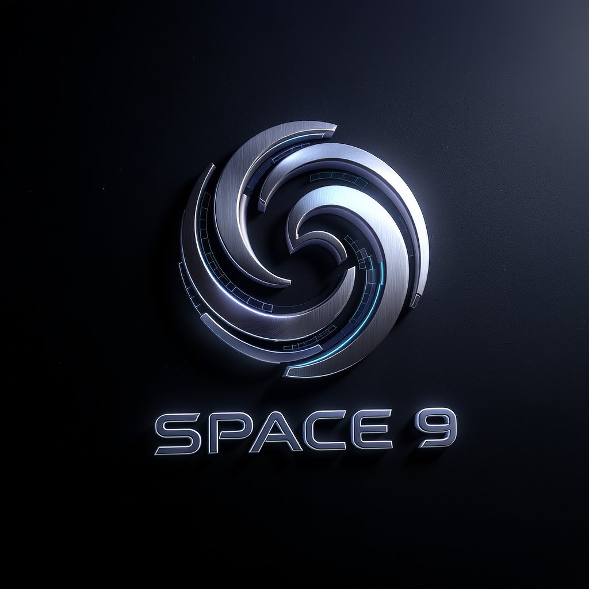
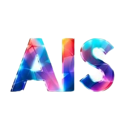
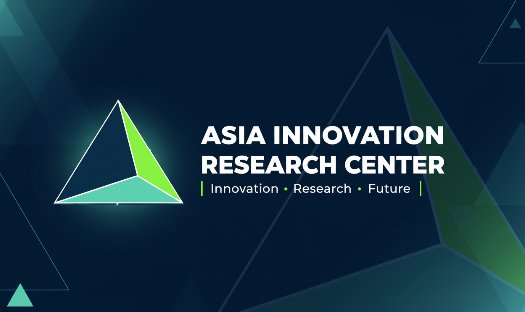
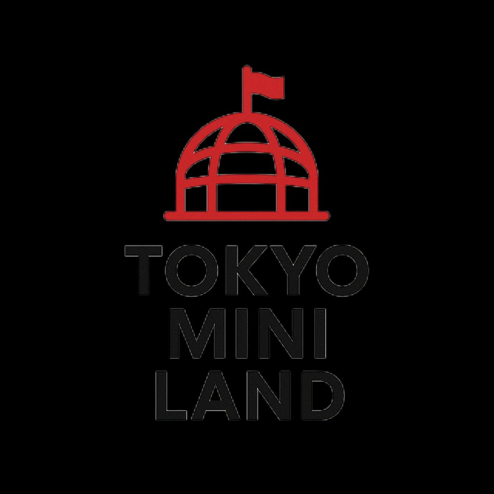

Business Pillars
四大事業領域 — 協同共生のエコシステム
UTの事業体系は孤立したプロダクトラインではなく、相互にエンパワーメントするエコシステムの循環です。法務基盤がすべての事業のコンプライアンスを支え、データとAI能力が各セクターに技術力を提供します。
法務・財務サービス
Legal & Financial Services
行政書士法人＋税理士法人の二重資格体制により、ビザ申請、法人設立、税務、法律顧問、資産配置まで全周期型サービスを提供。クロスボーダー企業の日本進出における競合が模倣困難な差別化基盤を構築。
- 経営管理ビザ申請
- 法人設立・税務代理
- 資産管理・財務計画
- コンプライアンス審査
データ解析・IT開発
Data & IT Solutions
創業以来の中核事業。AIを活用した動画データ解析、ITシステム開発、クラウドマイグレーション、システムアーキテクチャ設計・運用保守まで、デジタル運営を全方位的にサポート。
- AI動画データ解析
- ITシステム開発
- クラウド移行
- デジタル運営支援
新規事業部・ディープテック・インキュベーション
Deep Tech Incubation
SPACE 9バーチャルアクセラレーターを中核に、ヒューマノイド・ロボティクス、3D SLAMスキャナー、メタバース＆Web3イノベーションなど、次世代技術の事業化を推進。
- SPACE 9 アクセラレーター
- Tokyo Mini Land
- 先端医療連携
- ロボティクス・3D SLAM
AIコマース対外投資
AI Commerce Investment
2026年6月正式始動。6年間蓄積したデータ資産、クロスボーダー実務ノウハウ、日本市場における運営基盤を活かし、AIを活用した次世代クロスボーダー・バリューチェーンを構築。
- AI駆動EC最適化
- 越境物流連携
- 決済インフラ統合
- データ横断運営基盤

Asian Ecosystem
エンパワーメント基盤 — 4大支援プラットフォーム
イノベーションの発掘から事業化、資本市場へのアクセスまで、4つのプラットフォームが一貫したエコシステムとして機能します。

SPACE 9
アクセラレーター＆コミュニティ
分散型イノベーション協業ネットワーク。コアテクノロジープロジェクトの実装推進とクロスボーダーリソースの連携を支援。

AIS
アジア・イノベーション・サミット
国際的な情報発信とマッチングプラットフォーム。優れたインキュベーションプロジェクトに、多国籍企業との連携とブランド価値向上の機会を提供。

AIRC
アジア・イノベーション・リサーチセンター
データ支援と産業評価。シンクタンクの知見を活かし、資本運用や戦略策定にデータ根拠を提供。

Tokyo Mini Land
リアル・インキュベーション拠点
若手起業家とクリエイティブプロトタイプのインキュベーションを主導する実体空間。早期段階の事業に対し、東京における物理的な拠点とコミュニティを提供します。
Core Business Matrix
コア事業マトリクス
ヒューマノイドロボットハンドプロジェクト
日本を代表する電機メーカーのローカルサポートを基盤に、次世代ロボティクス・エコシステムへの本格参入を推進しています。
3D SLAMスキャナー
高精度な三次元マッピング技術を活用した先進ソリューションを提供し、オンプレミス導入およびSaaSサブスクリプションモデルに対応しています。
メタバース・Web3イノベーション事業
デジタルリスクマネジメントの枠組みを融合し、Web3保険ソリューションおよび分散型コラボレーション会議システムを開発・運営しています。
Tokyo Mini Land
若手起業家およびクリエイティブなプロトタイプ開発を主軸とし、事業化初期段階における実践的なインキュベーション拠点を提供します。
OLLA
少子高齢化社会のニーズを見据えたクロスボーダー生活支援プラットフォームとして、高頻度かつ生活必需性の高いサービスを展開しています。
YTC 日中イノベーション・エコシステム母基金
日本・中国・米国を結ぶハイレベルなPE資本ネットワークを構築し、SPAC上場支援および産業チェーンへの戦略投資を主導しています。
AIH アジア・イノベーションセンター
ナスダック起業家センターのアジア教育パートナーとして、世界トップクラスの資本市場へのアクセス機会を提供しています。
TAI アジア研究所（The Asia Institute）
アジア有数のシンクタンクとして、産業分析・市場評価・マクロ政策研究を通じて高度な戦略的インサイトを提供しています。
アジア市場への挑戦を、
私たちが支援します。
私たちが支援します。
法務・財務・IT・AI・インキュベーションを通じて、
企業の持続的な成長を支援します。
企業の持続的な成長を支援します。